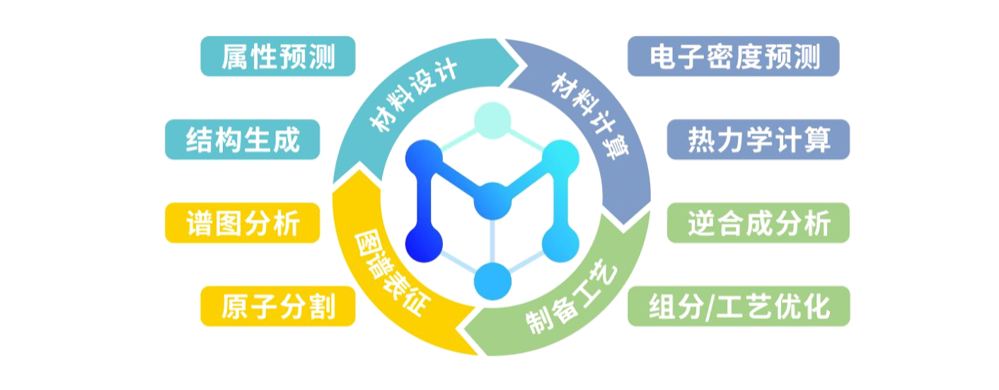

CAPABILITY / 01
属性预测
从结构与组成出发，预测形成能、带隙、弹性模量等性质。
模型
数据集
PaddleMaterials 是面向材料科学的智能开发套件，连接材料结构、性质、电子结构、谱图与模拟，支持从预测到生成的端到端研究流程。
每项能力分别展示已支持的预训练模型与 AI-ready 数据集，帮助研究者快速找到合适的起点。
从结构与组成出发，预测形成能、带隙、弹性模量等性质。
面向逆向设计，生成新的晶体结构，探索更大的材料空间。
用可学习势函数替代高成本 DFT，支撑分子动力学计算。
预测电子密度等物理场，帮助理解材料内部的电子结构。
从 NMR 等实验谱图重建分子结构，连接信号与化学空间。
增强显微图像与谱图信号，为实验数据提供更清晰的输入。
从属性预测、结构生成，到电子密度预测、热力学计算、逆合成分析与组分 / 工艺优化，PaddleMaterials 覆盖材料发现的多个关键环节。

Trainer 负责训练、微调与实验管理；Predictor 负责加载预训练或自定义权重，完成结构处理、模型推理与结果输出，为后续应用集成和部署提供统一入口。
从安装、训练到加载权重与推理输出，通过统一入口快速运行已有模型，把时间留给真正的材料问题。